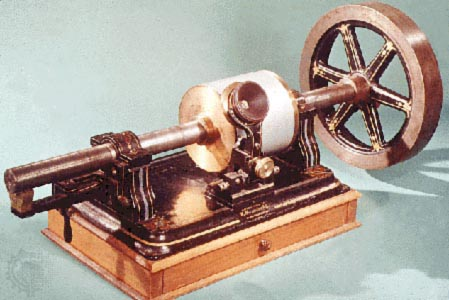
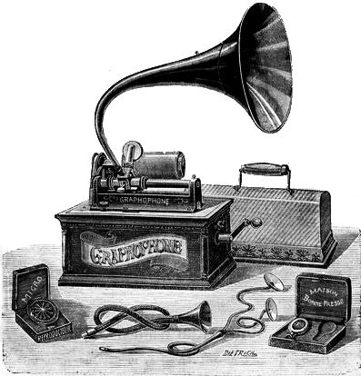
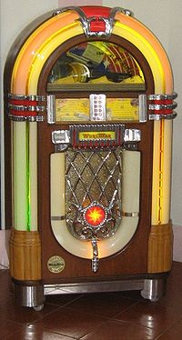
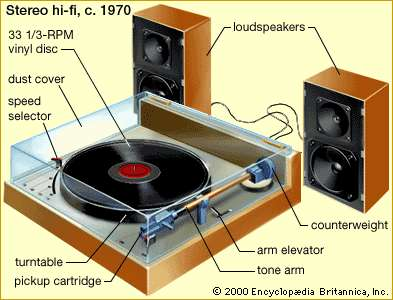
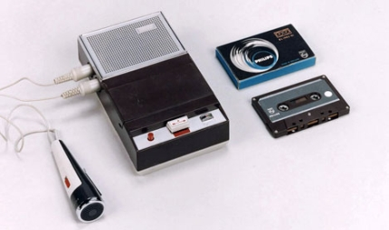
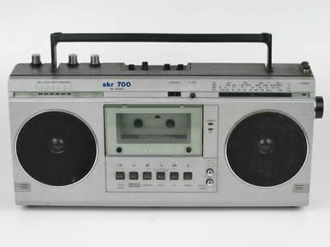
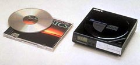
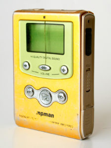

Uma breve passagem na história dos dispositivos de música

O fonógrafo é inventado por Thomas Edison. Uma fina folha de papel alumínio ou papel de cera envolto em um cilíndro. O som era gravado ou tocado ao girar o cilídro. Identações no papel eram responsáveis pelo som.

Volta Laboratory, criado por Alexander Graham Bell, melhorou o fonógrafo criado por Edison, dando-lhe o nome de grafofone. Utilizou cilíndros de papelão revestidos em cera, possibilitando gravações mais longas e duradoras. Mais tarde, em torno de 1890, passou a usarem gravações em discos.

Dispositivos que operavam por moedas passaram a serem chamadas de jukeboxes. Os cilíndros foram trocados por discos e a troca de discos é automatizada. Estava presente em bares, lanchonetes, especialmente populares durante a Segunda Guerra Mundial.

Os tocadores de discos elétricos tornaram-se populares dado seu preço acessível, ser portátil, à bateria e possuirem amplificadores e auto-falantes.

A empresa Philips desenvolveu, em 1963 na Bélgica, a fita cassette, sendo 1/4 do tamanho das fitas magnéticas da época. Com isso, em 1964, lançou o tocador cassette compacto, portátil e à bateria

É criado no Japão o Boombox, possuindo sepaço para uma ou duas fitas cassettes, rádio AM/FM e, geralmente, uma alça para carregar. Sua popularidade deu-se pela qualidade do som e tamanho compacto.

A Sony desenvolve o primeiro tocador de CD. Os tocadores de CDs portáteis foram então introduzidos em 1984, porém só se tornaram populares nos anos 90.

O primeiro tocador MP3, MPMan, foi desenvolvido pela SaeHan Information Systems, na Coréia do Sul. Porém, por causa do preço alto, inconveniente para o uso e restritivo, foi um fracasso. Alguns meses depois, Rio PMP300 criado pela Diamond Multimedia era mais barato, conectava-se facilmente ao computador, tonando-se relativamente bem sucedido.
Aproveitando-se da internet e advento dos dispositivos, serviços de streaming tem se tornado populares. Não é mais necessário ter acesso à música fisicamente, basta utilizar os serviços pagos ou gratuítos disponibilizados por empresas como YouTube, Spotify. Isso possibilita o acesso e a descoberta de novas músicas facilmente, sem a compra física de CDs, LPs.